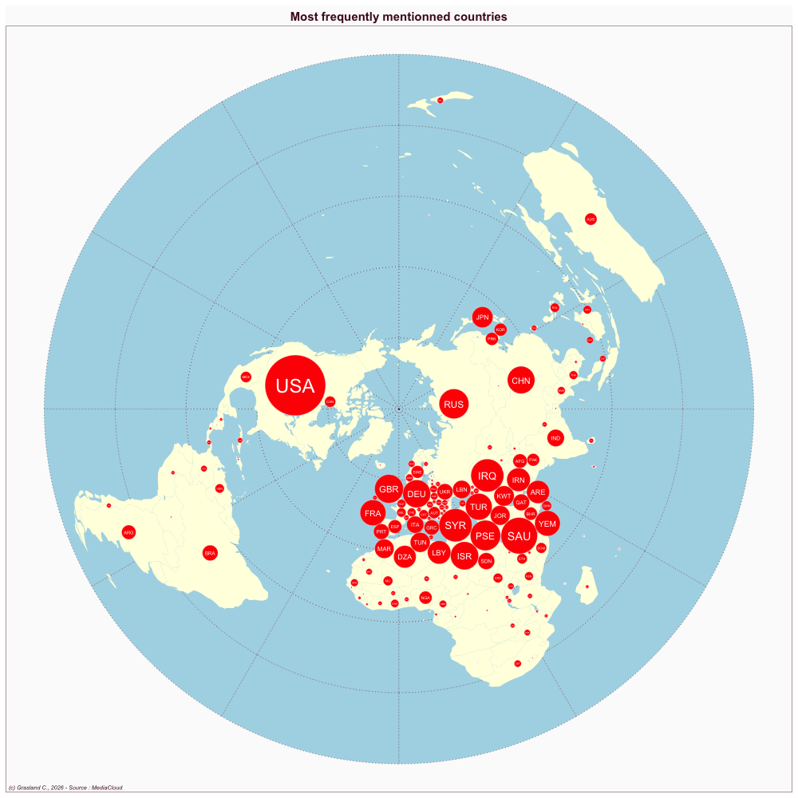

Egypt
- Website : Al Wafd
Scale
- Global
- National
Topics
- General news
- Political news
- Economic news
Publications
Ayyad K, Lugo-Ocando J. 2023. Reporters’ agency and (de) escalation during the 2011 uprising in egypt: Re-writing the historical role of the news media during the arab spring. Online Journal of Communication and Media Technologies 13: e202330